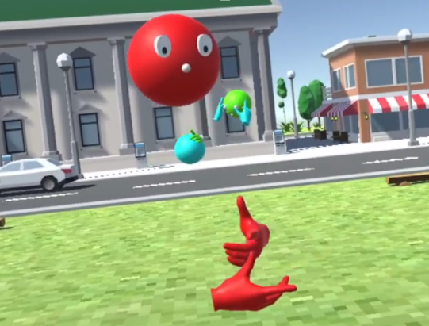
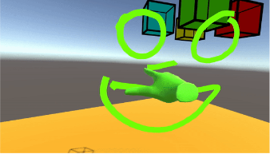
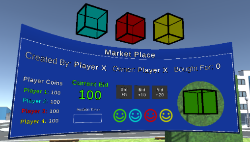
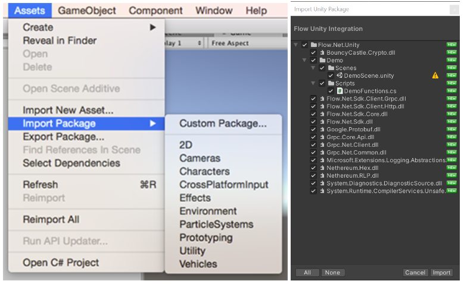

Foundry Researcher
Built a networked VR research application using Photon 2 and OpenXR, packaged a Flow–Unity integration, and coordinated user studies in 2022.
-
I worked remotely as a researcher for the company Foundry full-time from May 2022 to August 2022, then switched to in-person part-time from August 2022 to December 2022. I was on a team led by Chao Peng and David Long.
-
After the Flow-Unity integration, we pitched a research study about Virtual Reality as an educational medium to Foundry, and it got accepted. The remainder of the summer was spent designing the game and building a VR multiplayer framework in Unity with Photon 2, OpenXR, and Oculus Integration. The multiplayer system allowed players to see each other in a virtual environment and send RPC calls for synchronized events.
-
When I switched to part-time because of classes, development began on the game experience. The first part of the experience was a drawing section where players would create artwork in a shared space. The multiplayer system allowed players to see each other drawing in 3D space in real-time.
-
The second interactive section was an auction game, where players would trade their artwork by bidding. The drawings were resized to fit into cubes so players could see them at all times. This section was designed to teach players how digital property can be exchanged.
-
After developing and polishing the VR experience, we ran the user study. I got CITI training and certification to conduct the user study personally. Our research had a budget of $500 to give to participants, so each participant was given $10. The VR experience requires groups of four. I conducted seven paid study groups, including the pilot group, and coordinated all aspects of the user study, from gathering and coordinating all participants to running the actual study.
-
I recruited participants using campus flyers linked by QR code to a time-slot signup form, then coordinated attendance for the study sessions.
-
The study itself had a few key phases. First, we would gather the participants into our lab and have them sign a consent form and fill out a demographic survey. Then we would have them play through the VR experience, which averaged about 15-20 minutes, while supervising to make sure no one had any problems with VR controls or motion sickness. After they finish, we would have them complete three more surveys and record an exit interview with each person individually. Start to finish each group took about 35-45 minutes to complete.
-
I first worked on a Flow-Unity integration where we brought the functionality of the Flow library, which can interact with several different blockchains, and created a Unity package. We wrapped all the functionality into a single unitypackage file that includes all the necessary DLLs and a demo C# file that showed how to use the functions.



